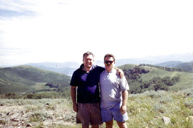
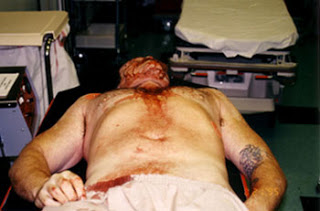
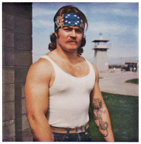
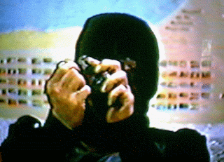
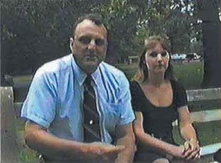

Brothers in better times: Jesse Trentadue (left) poses with his younger brother Kenneth, who would later be murdered by the FBI.
It is doubtful that Kenneth Trentadue really understood, as he was being tortured and beaten to death by federal agents, why he had been singled out for such treatment.
What we do know -- apart from the fact that he was murdered, rather than a victim of suicide -- is that Kenneth (or Kenney, as his family knew him) sold himself dearly.
A muscular man of slightly less than average height who somewhat resembled mixed martial artist Don Frye, Kenney apparently fought tenaciously enough to drive his captors -- people no doubt accustomed to dealing with meek, plaintive victims over-awed by the supposed authority of their assailants -- into a vindictive frenzy. Kenney was not only beaten into a lumpy, bloody pulp, he was throttled with a garrote made from plastic zip-cuffs.
Of the many varieties of freedom, the grimmest may be that exercised by Kenney Trentadue: The freedom to choose how you will die, once you are irretrievably in the hands of the Enemy. Kenney chose not to die on the Enemy's terms.


Your tax dollars at work: The mortal remains of Kenneth Trentadue, who was tortured and beaten to death by federal agents (most likely FBI) at a Federal Transfer Facility in Oklahoma.
Just a few weeks earlier, Kenney had been detained in San Diego as he re-entered the U.S. from Mexico. His wife Carmen had family down in Mexico, and Kenney had made a quick trip to visit them down south. This was a risky proposition, since a warrant had been issued for his arrest for violating his parole. Kenney was stopped by a border guard who ran a background check on him. As a result, unlikely as it might seem, Kenney was soon bound for Oklahoma City.
Years earlier, Kenney had made a living as a bank robber. Odd as it may seem, it is still considered a crime for private citizens other than those in the employ of the Federal Reserve to rob banks (admittedly, the Fed's methods are more sophisticated than the strong-arm tactics used by common crooks); accordingly, Kenney ended up serving a stretch in prison. In 1988 he emerged a chastened and changed man. He eventually married Carmen, and began working in construction during the early phase of the Fed-engineered housing bubble. Kenney and Carmen had a son, Vito, who was born shortly after Kenney was arrested in June 1995.
Parole officers have extraordinary -- and arguably excessive -- authority over their charges. The one assigned to Kenney apparently was a Pharisaical prig who imposed a total ban on alcohol consumption, despite the fact that Kenney was not an alcoholic and had no intoxication-related offenses on his record.
Nonetheless, the petty dictator presiding over Kenney's parole made abstinence from Demon Rum (and even beer) a condition of his continued liberty. In a decision I consider both completely unwise and commendably rebellious, Kenney simply stopped checking in with his parole officer, focusing instead on providing for his family -- and enjoying the occasional adult beverage, in moderation.


He put up a fight: Kenney Trentadue, before he was murdered by the Feds.Following his June 10, 1995 arrest in San Diego, the 44-year-old Kenney was taken into federal custody. Just a couple of weeks later, federal indictments were handed down against Timothy McVeigh and Terry Nicholas -- as well as "others unknown" -- for their role in the Oklahoma City Bombing. This occurred on August 10. Kenney arrived at the Oklahoma City Federal Transfer Facility -- just a few miles from the courtroom where McVeigh and Nicholas had been indicted -- on August 18. Three days later, he was dead.
On August 21, 1995, guards "found" Kenney's body hanging from a bedsheet in his cell.
A few hours after this "discovery," Kenney's mother Wilma received a call from acting warden Marie Cutler informing her of the supposed suicide. The call was both perfunctory and pushy: Cutler informed Kenney's mother that the body was to be cremated very soon. Shocked as she was to hear that her youngest son was dead, Mrs. Trentadue had the presence of mind to demand that nothing of the sort would be done without the permission of Kenney's wife. Cutler was nonplussed to learn that Kenney was the married father of a newborn son; she had been told he was single.
Not only were prison officials eager to cremate Kenney's body, they were also frantic to sanitize the "suicide-proof" cell. Doing so before the medical examiner had a chance to inspect the scene was a crime, of course. But it was done anyway.
The floors and walls of the cell were mopped and scrubbed; the bed sheet with which Kenney had supposedly hung himself was "lost" or destroyed; most of his clothing ended up in the possession of an FBI agent who let that vital physical evidence putrefy in the trunk of his car.
Yes, I suppose the common FBI agent is sufficiently stupid and inept to treat evidence this way. But there is such a thing as strategically suitable stupidity, and this case offers a perfect example. There was a wealth of physical evidence produced by the untimely death of Kenney Trentadue, and within a few hours of the event it had been reduced to a pittance through the coordinated efforts of the FBI and prison officials.
When Kenney's mother Wilma and older brother Jesse were finally allowed to see the body, they did so in the unpleasant company of Michael Hood, regional counsel for the Bureau of Prisons. As Jesse later recalled the conversation, the appropriately named Hood issued an ineptly veiled warning:
"The Bureau of Prisons, the FBI and the U.S. Attorney's office -- we're one big Justice Department," Hood reportedly said.
Put more plainly: Don't get any ideas about challenging the Official Line, because nobody in the government that supposedly serves you will provide any help.
Left alone with Kenney's body, his mother and brother set to the awful task of scraping away several strata of post-mortem makeup that had been applied with all the subtlety of a transvestite hooker. They found his body mottled with contusions and other evidence of a severe beating, administered by both fists and batons. His head had been repeatedly lacerated, and his throat appeared to have been cut.

"My brother had been so badly beaten that I personally saw several mourners leave the viewing to vomit in the parking lot!" Jesse, a trial attorney, wrote in an August 30, 1995 letter to the Bureau of Prisons that was incendiary with understandable rage. "Anyone seeing my brother's battered body with his bruised and lacerated forehead, throat cut, and blue-black knuckles would not have concluded that his death was either easy or a 'suicide'! "
"I will always be grateful to my brother for his love of life, great heart and strength," wrote Jesse. "Had my brother been less of a man, your guards would have been able to kill him without inflicting so much injury to his body. Had that occurred, Kenney's family would forever be guilt-ridden over his death. Each of us would have lived with the pain of thinking that Kenneth took his own life and that we had somehow failed him. By making the fight he did for his life, Ken has saved us that pain, and God bless for having done so!"
Jesse wasn't the only one who found the official story facially implausible. On August 22, Kevin Rowland, chief examiner for the Oklahoma Medical Examiner's office, filed a complaint with the FBI describing Kenney's death as "murder."The state's chief Medical Examiner, Fred Jordan, refused to classify the death as a suicide, labeling the cause of Trendtadue's death "unknown."
The Bureau of Prisons convened a board of inquiry, and -- in keeping with Michael Hood's promise -- immediately put in the fix: The attorney heading the probe classified its findings as "attorney work product, a move intended to foreclose discovery of the material in future court actions.
While corrupt cover-ups are commonplace, Jesse found it strange that federal functionaries were so anxious to conceal the circumstances of Kenney's death. He was, after all, a reformed ex-con whose only offense was a trivial parole violation. With a wife and newborn son waiting for him, Kenney had no reason to kill himself. In phone calls to his family during the days before his death, Kenney hadn't displayed any symptoms of suicidal depression. The evidence inscribed in his body by his assailants demonstrated that Kenney had been beaten and tortured to death. But why?
Shortly after he fired off his letter to the BOP, Jesse received an anonymous phone call providing him with an explanation:
"Look, your brother was murdered by the FBI. There was an interrogation that went wrong.... He fit a profile."
Kenney was the victim of a monumentally improbable case of mistaken identity. He was a near-physical match for one of the "Others Unknown" suspected of involvement in the OKC Bombing: Richard Lee Guthrie.

As portrayed in the terse language of an all-points bulletin, Guthrie -- aka "John Doe #2," -- was a ringer for Kenney Trentadue. He was 5'9" and weighed a solid 180-190 lbs, brown-haired, with a dragon tattoo on his left forearm. Most importantly, Guthrie was a bank robber, as Kenney had been before going to prison. More specifically, Guthrie robbed banks on behalf of the Aryan Republican Army, which conducted some 22 bank heists in the early 1990s and netted about $250,000 to fund domestic terrorism.
Guthrie was in federal custody at the time of Kenney's arrest. For neither the first nor the last time, one of Leviathan's tentacles wasn't aware what the other was doing.
Like Kenney, Guthrie was the victim of an anomalous prison suicide: His body was "found" by a guard hanging from a bedsheet in his cell in 1996. Just before his death, Guthrie had told the Los Angeles Times that he was writing a memoir that would, among other things, describe connections between the ARA and the OKC bombing.
Nor was Guthrie the only other inmate connected to the Trentadue case to end up dangling from the ceiling of his cell. Alden Gillis Baker, an inmate at the OKC Transfer Center, told Jesse that he had overheard an "altercation" involving "a lot of physical violence" the night Kenney was killed; that was followed by "faint moaning" and the sound of bedsheets being torn. Baker repeated that account in a subsequent deposition that was rejected by a judge. In 2000, Baker was also "found" hanged to death by a guard in a California federal prison.
For more than a decade, as he pursued the truth about his brother's death with irrepressible tenacity, Jesse Trentadue experienced first-hand the concentrated, malicious corruption of the Regime that rules us. He witnessed what he describes as an "epidemic of government corruption" -- "Perjury, subornation of perjury, threats to witnesses [including Fred Jordan, the Oklahoma medical examiner, who was intimidated into changing his conclusions about Kenney's death], fabrication of evidence, and a sh*t-pile of other acts of obstruction of justice.... The government obtained an order preventing me from reporting those crimes to either federal prosecutors or the Senate Judiciary Committee while at the same time it was trying to indict me and my attorneys with the perjured testimony of a secret FBI informant."
The bogus perjury charge, Jess Trentadue explained to Pro Libertate, was based on an accusation "that I had paid people to perjure themselves. Look, I don't have the money to pay for perjury; I'm a trial attorney who's doing the investigation into Kenney's death on my own time and at my own expense. And even if I wanted to buy witnesses, I couldn't outbid the Feds." That charge was laughed out of court.


I want my NTV (Nazi Television)! Peter Langan, aka "Commandante Pedro" of the Aryan Republican Army, mugs for the cameras in a recruiting video.
Apart from the self-defense reflex of corrupt officials, the cover-up made no sense to Jesse -- until 2004, when he received -- from a sympathetic source at the FBI -- two redacted documents proving that the FBI had been aware of a connection between the OKC bombing and the Aryan Republican Army, a connection that ran through a bizarre white supremacist commune in Oklahoma called Elohim City. That tip primed a Freedom of Information Act Request that brought forth more than 250 pages of documents -- all of them heavily censored -- confirming that the FBI and other federal agencies (including the ATF, which had planted Carol Howe at Elohim City) had abundant and detailed advance intelligence of the bombing.


Above and beyond the call of duty: Carol Howe, undercover operative for the ATF, with her then-boyfriend, the malodorous Klans-"man" Dennis Mahon -- who was himself squealing like a frightened little girl to the Feds.
Elohim City was not merely a racist redoubt: As with any similar gathering of white supremacists, federal informants were thick on the ground in that commune. In addition to the above-mentioned Carol Howe, the late Robert Millar, the patriarch of that particular kibbutz, was on the federal payroll.
An enigmatic German national named Andreas Strassmeir, who was the group's head of security, has long been suspected of being an intelligence asset for both Washington and his own national government. A pestiferous Klan activist named Dennis Mahon, also spent time at Elohim City, was likewise doing snitch duty. At least one other individual there was taking notes and passing them along to the Southern Poverty Law Center, a self-appointed "watchdog" group headed by self-promoting fraud and sexual degenerate Morris Dees.
At least two ARA members were "part-time" residents of Elohim City, and there is reason to believe that Timothy McVeigh -- who called the commune just shortly before the OKC bombing -- had hooked up with the ARA to carry out at least some of their robberies.
Last year, with the assistance of Jesse Trentadue, Terry Nichols -- who is serving a life sentence for his role in the bombing, and cannot be tried again on capital charges -- filed a deposition in a Salt Lake City federal court. Not only did Nichols implicate the ARA in the bombing plot, he claimed that McVeigh -- who allegedly had been recruited while in the Army to carry out undercover missions -- had been working under the supervision of Larry Potts, the shame-encrusted FBI official who presided over the murderous attack on the Randy Weaver family and the annihilation of the Branch Davidians at Mt. Carmel, Texas.
Just days ago, Jesse won two significant victories in federal court. A federal judge in Oklahoma, ruling that the FBI had intentionally inflicted severe mental suffering on the Trentadue family, awarded the victims nearly one million dollars in damages. A few days later, U.S. Federal District Court Judge Ted Stewart ordered the "Justice" department to hand over its long-suppressed report on Kenney's death.
"The Justice [sic] Department's lawyers at the hearing were muttering about how they needed `extensions,' and the judge wasn't having any of it," Jesse Trentadue told Pro Libertate. "When Judge Stewart reminded them that the 10th Circuit Court had just ruled that Jesse had a right to see the documents, and imposed a deadline of April 10th, "the Justice [sic!] Department lawyers said that they needed `permission from their superiors' to produce the documents -- which really didn't sit well with the judge," Jesse continues. "He gave them until May 1 to turn over the documents or be hit with a contempt citation."
This would mean "that arrest warrants would be issued, and federal Marshals sent to arrest the non-cooperating officials" -- although, in the surpassingly improbable event that the Marshals were sent to collect the malefactors, they would be treated with much greater delicacy than Kenney had been.
"There must be something really ugly in that set of documents," Jesse points out. "The Feds have done everything they could for nearly a decade and a half to keep me from getting them."
Does he believe Nichols' claim that the OKC bombing was a federally staged event? '
"That's Mr. Nichols' account, and he has no reason I can think of to lie," Jesse told me. "He tried to get [former Attorney General] John Ashcroft to look into his testimony, but he wasn't interested. And David Paul Hammer, who was McVeigh's cellmate [on death row prior to McVeigh's execution] has filed a deposition describing how McVeigh confirmed the same story -- that McVeigh was a government-run undercover operative, that he was involved in the ARA's bank robberies, and that the Elohim City group was riddled with federal informants."
"I'm not saying that this is the real story of the OKC bombing," Jesse concludes. "I got involved in this because I wanted to know what had happened to my brother. But all of these testimonies, coming as they do from men who didn't know each other and who don't have obvious reasons to lie, overlay each other extremely well and tell a very credible story."
But the behavior of the Feds in dealing with all of this could be considered the clincher.

"There was a time when I was someone who believed in the integrity of the `System,' who thought that our government may be inept and occasionally corrupt, but that it was run by basically decent and well-intentioned people," Jesse recounts. "Obviously, I don't think that way any more."
At least three people, including Kenney, were killed through staged prison "suicides" to cover up something "really ugly" about Federal foreknowledge of, and participation in, the OKC bombing plot. Kenney was tortured to death. This wasn't done because the Feds wanted to know something Kenney (mistakenly identified as Guthrie) knew; it was done because the Feds assumed he could tell the truth about OKC, and wanted to shut him up permanently.
Through no desire of his own, Jesse has become something of an expert about the federal prison system. How common is it for people to be tortured or murdered as Kenney was?
"It's very common, I think," Jesse replied when that question was posed to him. "And if you look at what was done to Kenney back in 1995, it was the same kind of thing that was done years later at Abu Ghraib in Iraq. It could be said that they used my brother as practice for Iraq. But that kind of thing happens in our system here all the time, I'm convinced."
This is a thought to meditate on as we approach April 19 -- a date freighted with significance for those who understand the consummately criminal nature of the Regime that rules us.
Obiter dicta
Please forgive me for the length of this post-script.
I've been invited, once again, to address this year's Spring Convention of the United Republicans of California on April 26. The event will be held at the Embassy Suites hotel in Arcadia, California. UROC, which calls itself the "republican wing of the Republican party," is not the Bushified GOP. At last year's convention they enthusiastically endorsed Ron Paul for president. So, trite as it may seem to say so, it's clear that UROC rocks.
Last week my schedule was wonderfully cluttered with radio appearances with exceptionally friendly and well-informed hosts.
My interview discussing torture and permanent war with the heroic Charles Goyette can be heard here.
Mark Anderson invited me to be a guest on his program "When Worlds Collide"; the archived program (which suffered from a few technical glitches, alas) is here.
Chris Arnzen, host of the Christian program "Iron Sharpens Iron," had me on to discuss the background of "Mormon Fundamentalism" in light of the recent crackdown on the FLDS cult in Texas; the audio can be found here. Once again, there are some technical problems in this broadcast: My uncharacteristic occasional stuttering was a reaction to a persistent echo on my end of the telephone conversation. Thankfully, Chris said that the echo wasn't audible over the air.
Dale Williams of Salt Lake City's KTKK ("K-Talk") invited me on for an hour last Thursday while he was filling in for Jack Stockwell. We discussed -- among other things -- my firing by the JBS (he brought up the subject, I didn't), the Free State project, the increasingly well-entrenched police state, and the right to resist arrest. I can't find an archive of that program; hopefully one will soon materialize.
And, as has become customary, Dr. Stanley Monteith had me on his Radio Liberty program as a guest twice last week. Dr. Stan is a wonderful and amazingly well-informed guy.
 On sale now
On sale nowDum spiro, pugno!
15 comments:
All "aryan" groups are infiltrated or ran by intelligence agencies. When a bloggist or commentator, radio host starts scapegoating races i disconnect. Knowing too much and not being a high profile person can be bad for your health wonder what Mr. Trentadue knew. War on terror schmerror the war is on Jane Handbag and Joe Sixpack the un persons. Osama was known as Tim Usman when on the Criminals In Action payroll and al queda translates to the toilet both are constructs of the elites' praetorian guard/schutzstaffel agencies to keep us fearful and accept every usurpation of rights in the name of peace and safety or the illusion thereof.
Will, I've been following you ever since you were with The Birch Society and left them along with you. The one thing that I cannot get my head past, is why you can see that the OKC event was a government job, but haven't seemed to come to the same conclusion about 9/11. Or has your mind changed on that subject as of late?
THANK YOU, Will, for bringing the Trentadues' story up to date. I had not heard a word about it for several years. Obviously the MSM is not going to touch this toxic story with a ten-mile pole.
"[The judge] gave them until May 1 to turn over the documents or be hit with a contempt citation."
Mayday, Mayday! We'll be watching.
These are the untold stories that need to be told. The blood of these innocent victims - like Tenetradueau- cry out for justice.
Keep up the courageous informative work.
anonymous @ 11:29 -- My view is that the Bush administration and the permanent "security" bureaucracy had detailed foreknowledge of the 9/11 attacks at the very least, and that the most generous assessment we can make of their role was that they were knowing, passive accomplices to mass murder of Americans.
I am a persuadable agnostic regarding many of the theories circulated by the 9/11 Truth Movement.
While at The New American, I urged my editor and JBS management to give that movement's claims a fair and respectful hearing, rather than simply assuming a priori that they were either entirely irresponsible or a form of "controlled opposition," which was the JBS management's default view (their logic was that since these other movements were competitors with the Society for recruits, donations, and other resources, they just had to be controlled by the "Insiders" somehow).
I know Bill Jasper -- who did heroic work on the OKC bombing -- shared at least some of my views. But JBS/TNA management had no interest in pursuing the issue, in large measure for the reason described above. But they were willing to waste editorial space for petty attacks on 9/11 truth activists like Dave Von Kliest. I was originally "offered" the "opportunity" to do the Von Kliest hit piece, and turned it down.
Is a post to come on the Fundamental LDS issue? I hope so.
Conan the Cimmerian
I resided in OKC when this happened. What a mess. You can't imagine the ugly talk about the coroner being "bought off" in his final report. His credibility with the public died that day. There are plenty of Okies who have been personally skewered by the Feds, and don't intend to be the next victim. We don't trust our state officials either.
Man that is the worst case of suicide i have seen since joe neckbone of the montana militia shot himself 16 times how did he manage to beat himself to a pulp?
what is our childrens learning
From the Deseret News article:
"Trentadue said the effort to hide information from him comes from the top ranks of the Justice Department."
Got to wonder who they're covering up for. Did Janet Reno herself sign his brother's torture and execution warrant?
If so, nobody in the current administration is going to be shocked. As Dan Froomkin reports, torturing is standard procedure now, directed straight from the White House:
------------
President Bush says he was aware that his top aides met in the White House basement to micromanage the application of waterboarding and other widely-condemned interrogation techniques. And he says it was no big deal.
"I'm aware our national security team met on this issue. And I approved," Bush told ABC News' Martha Raddatz on Friday. "I don't know what's new about that; I'm not so sure what's so startling about that."
It's true that it has been widely assumed and occasionally reported that the CIA's use of brutal interrogation techniques could be traced back to the White House on a general level. But it was most definitely new last week when ABC News reported that a group of Bush's top aides, including Vice President Cheney, took part in meetings where they explicitly discussed and approved -- literally blow by blow -- tactics such as waterboarding. And while Bush has previously defended these tactics -- vaguely, and insisting against all evidence that they did not amount to torture -- he had not, until now, acknowledged that he personally OK'd them beforehand.
http://tinyurl.com/4zshsy
------------
I wish the above were from some dystopian novel. But it's from the Washington Post, and they are quoting the president's own words.
Excuse me; I feel sick.
Very much related to Mr. Grigg's above article, the below documentation ought to be of interest to everyone here:
"Germany's top neo-Nazis spy for ministry," Hannah Cleaver, Telegraph (U.K.), July 16, 2002 http://www.telegraph.co.uk/news/main.jhtml?xml=/news/2002/07/16/wgerm16.xml
http://web.archive.org/web/20030410195340/http://news.telegraph.co.uk/news/main.jhtml?xml=/news/2002/07/16/wgerm16.xml
"Neo-Nazi leader 'was MI6 agent,'" John Hooper, Guardian (U.K.), August 13, 2002 http://www.guardian.co.uk/international/story/0,3604,773568,00.html
"Neo-Nazis run rings around German intelligence services," Tony Paterson, Telegraph (U.K.), March 16, 2003 http://www.opinion.telegraph.co.uk/news/main.jhtml?xml=/news/2003/03/16/wnazi16.xml
http://web.archive.org/web/20030413232754/http://news.telegraph.co.uk/news/main.jhtml?xml=/news/2003/03/16/wnazi16.xml
"Quest to ban neo-Nazis ends in farce," Allan Hall, The Scotsman, March 19, 2003 http://news.scotsman.com/international.cfm?id=330602003
"Report: Police arrest IDF soldier suspected of belonging to neo-Nazi group," Jonathan Lis, Haaretz, May 5, 2005 http://www.haaretz.com/hasen/objects/pages/PrintArticleEn.jhtml?itemNo=572832
Excerpt from the above article:
""
Police on Wednesday arrested an Israel Defense Forces soldier suspected of belonging to a neo-Nazi group, Army Radio reported Thursday.
A detective squad detained the soldier, a new immigrant and a resident of the Ariel settlement in the West Bank, after his behavior aroused suspicion. Officers found heroin in his vehicle, Israel Radio reported.
Upon his arrest, the soldier told police he was a neo-Nazi and that he hated the state. A swastika was found tattooed on his left arm.
""
"Police arrest neo-Nazi IDF soldier," IsraelInsider, May 5, 2005 http://web.israelinsider.com/Articles/Briefs/5483.htm
"Police Discover Ring of Neo-Nazi Immigrants from CIS," Israel National News, June 2, 2005 http://web.archive.org/web/20050613080612/http://www.israelnationalnews.com/news.php3?id=83115
Excerpt from the above article:
""
The neo-Nazi group was discovered following the arrest on drug charges of a 20-year-old IDF soldier. A swastika tattooed on his arm aroused police suspicions, and neo-Nazi material was later discovered in his home.
""
"Neo-Nazi rally was organized by FBI informant," Henry Pierson Curtis with contribution from Rene Stutzman, Jim Leusner and Willoughby Mariano, Orlando Sentinel, February 15, 2007 http://www.geocities.com/psyop911/neo-nazi-rally-was-organized-by-fbi-informant.html
http://www.geocities.com/psyop911/27930152.pdf
http://web.archive.org/web/20070224053847/http://www.orlandosentinel.com/news/local/orange/orl-mhate1507feb15,0,4658933.story
"Police: Israeli Neo-Nazi Ring Busted," Amy Teibel, Associated Press (AP), September 9, 2007 http://www.forbes.com/feeds/ap/2007/09/09/ap4096684.html
Excerpt from the above article:
""
In a case that would seem unthinkable in the Jewish state, police said Sunday they have cracked a cell of young Israeli neo-Nazis accused in a string of attacks on foreign workers, religious Jews, drug addicts and gays.
""
"Ministers: Police Destroyed Klan Records," Associated Press (AP), February 26, 2008 http://www.baynews9.com/content/36/2008/2/26/327910.html
----------
Again related to the above, see the below post by me which provides extensive documentation concerning its titular subject:
"British Government Staged IRA Terrorism," TetrahedronOmega, August 24, 2007 http://www.armleg.com/forum/viewtopic.php?t=121&mforum=libertyandtruth
Thanks for writing this blog, Will. The OKC case never leaves my thoughts for more than a few days at a time, and the murder of Kenny Trentadue (and Terry Yeakey) REALLY sticks in my craw. The thought of ATF "officers" showing up after the fact to be heroes royally galls me.
Like the attacks of 9/11, the OKC bombing was demonstrably a government op from start to finish, designed to sway public opinion toward more police state controls on we the people and to grease the skids for such police state enabling legislation.
The OKC bombing and subsequent coverup stink to high heaven. I hope and pray that, ultimately, the truth will prevail.
I recall that some fellow was interviewed by Scott Horton over at AntiWar.com about OKC and believe they discussed this beating "suicide". In any event they're all cover-ups and "accidents" to silence anyone who gets too close for their own health.
Will, great essay, as usual. Thanks for including the links to your radio interviews. I had been thinking that your skills at self-promotion are somewhat lacking. Seems like many times you wouldn't even think to mention this blog if Dr. Stan didn't prod you for the info...
Dale Williams of Salt Lake City's KTKK ("K-Talk") invited me on for an hour last Thursday while he was filling in for Jack Stockwell. We discussed -- among other things -- my firing by the JBS (he brought up the subject, I didn't), the Free State project, the increasingly well-entrenched police state, and the right to resist arrest. I can't find an archive of that program; hopefully one will soon materialize.
--Will
Try this:
http://www.awakeandarise.org/radio/Dale_Williams_WilliamGrigg_April_10_2008.mp3
The FBI has drawn blood like this numerous times-THIS MAN WILL NOT BE FORGOTTEN!
Post a Comment